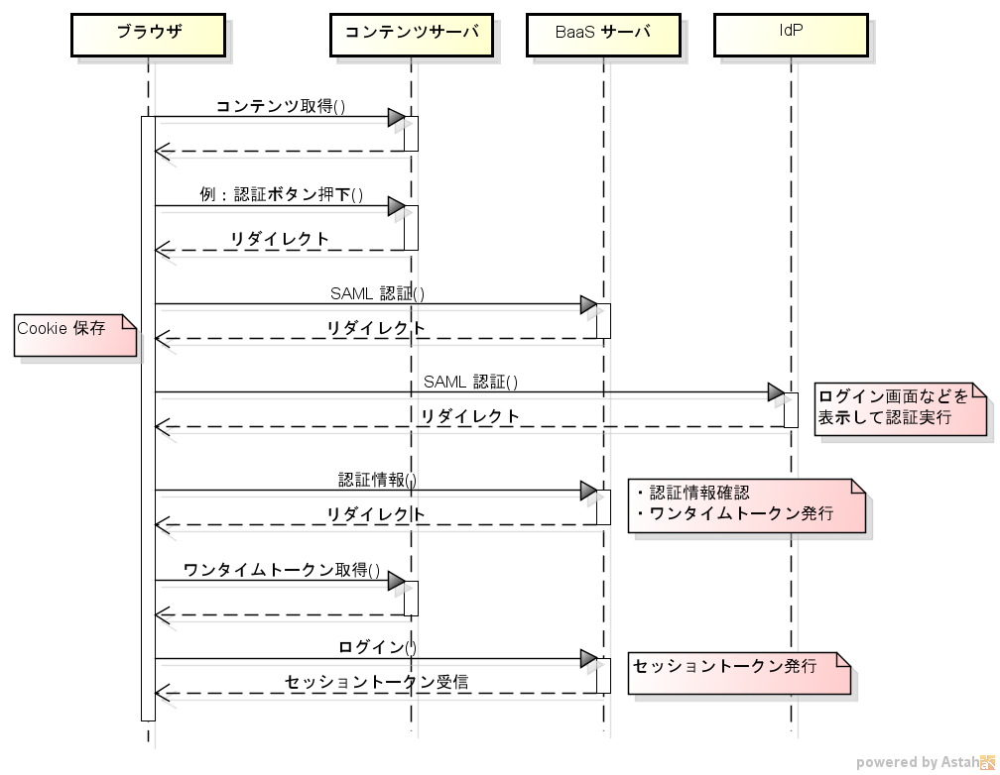
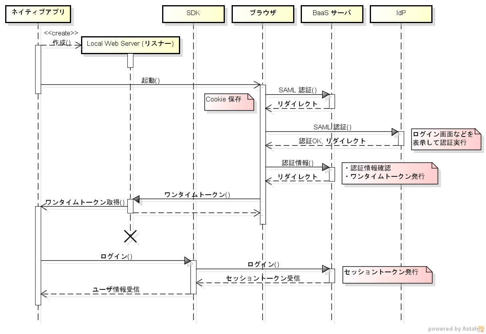

5.3. 動作概要¶
ここでは SAML 認証を利用する場合の動作シーケンスについて説明します。
5.3.1. Web アプリケーションの場合¶
Web アプリケーションの場合の動作シーケンスは以下のとおりです。 ここで「コンテンツサーバ」は Web アプリケーションのコンテンツ(HTML + JavaScript) を提供するサーバです。
{kind=link}
- ブラウザはコンテンツサーバにアクセスし、コンテンツを取得します。
- コンテンツサーバは、SAML 認証を行うタイミング(認証ボタンをおしたときなど)に、BaaS サーバの SAML 認証 URL にリダイレクトします。
- BaaS サーバは認証に必要な Cookie を発行した後、IdP にリダイレクトします。
- IdP は認証画面を出すなどして認証を実行します。
- 認証が完了したら、IdP は認証情報を BaaS サーバにリダイレクトします。
- BaaS サーバは認証情報を確認した後、ログイン用のワンタイムトークンを URL に付加してコンテンツサーバにリダイレクトします。
- Web アプリケーションは URL からワンタイムトークンを取得し、これを使用して BaaS のログインAPIを呼び出します。
- ログインが完了すると BaaS はセッショントークンを払い出します。
上記のうち、1, 2, 7 の処理については Web アプリケーション側で実装する必要があります。
5.3.2. ネイティブアプリケーションの場合¶
ネイティブアプリケーション(Windows, Android, iOS)の場合の動作シーケンスは以下のとおりです。
{kind=link}
- SAML 認証結果を受け取るための Local Web Server(リスナー)を作成します (カスタムURIスキームを利用できない場合)。
- SAML 認証を行うために、ブラウザを起動して BaaS サーバの SAML 認証 URL にアクセスします。
- BaaS サーバは認証に必要な Cookie を発行した後、IdP にリダイレクトします。
- IdP は認証画面を出すなどして認証を実行します。
- 認証が完了したら、IdP は認証情報を BaaS サーバにリダイレクトします。
- BaaS サーバは認証情報を確認した後、ログイン用のワンタイムトークンを URL に付加し、指定された URL にリダイレクトします。
- ネイティブアプリケーションはリダイレクトされた URL からワンタイムトークンを取得し、これを使用して SDK から BaaS のログインAPIを呼び出します。
- ログインが完了すると BaaS はセッショントークンを払い出します。
上記のうち、1, 2, 7 の処理についてはネイティブアプリケーション側で実装する必要があります。
リダイレクト URL の受け取り方法については以下の２通りがあります。
- カスタムURIスキームを使用する: Android, iOS の場合は、アプリケーション毎に定義したカスタムURIスキームを利用できます。
- ローカルWebサーバを使用する: PCのデスクトップアプリのようにカスタムURIスキームを使用できない場合は、アプリケーション内にローカルWebサーバを立ち上げ、http:// でリダイレクトURIを受け取ります。